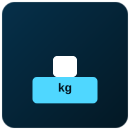

Sensores usados para identificar itens e pessoas, medir peso, monitorar ruído e detectar princípios de incêndio em ambientes industriais.
Nenhum sensor encontrado com esse filtro.

O MFRC522 é um módulo leitor/gravador de cartões RFID (identificação por radiofrequência) no padrão MIFARE, usado para controle de acesso e identificação de itens.
O módulo gera um campo eletromagnético de 13,56 MHz. Quando um cartão ou tag RFID passivo se aproxima, ele é energizado por esse campo e responde transmitindo seus dados (como um número de identificação único) de volta ao leitor, que se comunica com o microcontrolador via SPI.
| Tensão de alimentação | 3,3V |
|---|---|
| Frequência de operação | 13,56 MHz |
| Alcance de leitura | Até aproximadamente 5 cm |
| Interface de comunicação | SPI |
Digital (SPI)
Cada operador recebe um cartão RFID; ao aproximar o cartão do leitor MFRC522 conectado a um Arduino, o sistema libera o acionamento de uma máquina apenas para operadores cadastrados e autorizados.
NXP Semiconductors (fabricante original do CI MFRC522), Módulos breakout: diversos fabricantes compatíveis

A célula de carga é um transdutor que converte força/peso em um sinal elétrico, e o HX711 é o módulo amplificador/conversor que faz a leitura de precisão desse sinal para uso com microcontroladores.
A célula de carga contém extensômetros (strain gauges) colados em uma estrutura metálica que se deforma minimamente sob peso, formando uma ponte de Wheatstone. Essa deformação altera a resistência elétrica dos extensômetros gerando um sinal muito pequeno, que o HX711 amplifica e converte em um valor digital de alta resolução (24 bits).
| Tensão de alimentação do HX711 | 2,6V a 5,5V |
|---|---|
| Resolução do conversor | 24 bits |
| Capacidade da célula de carga | Varia conforme o modelo (ex.: 1 kg, 5 kg, 20 kg, 50 kg) |
| Comunicação | Protocolo digital de 2 fios (clock e dados) |
Digital (protocolo próprio de 2 fios)
Uma balança industrial construída com célula de carga e HX711 conectada a um Arduino verifica automaticamente se cada saco de produto embalado está dentro da faixa de peso especificada, rejeitando os fora do padrão.
Avia Semiconductor (fabricante original do CI HX711), Células de carga: diversos fabricantes (ex.: Straight Bar Load Cell genéricas)
O KY-037 é um módulo sensor de som com microfone de eletreto, capaz de detectar a presença e a intensidade de ruído no ambiente.
O microfone de eletreto capta as ondas sonoras e as converte em um pequeno sinal elétrico, que é amplificado pelo circuito do módulo. O módulo disponibiliza tanto uma saída analógica (proporcional à intensidade do som) quanto uma saída digital (que muda de estado quando um limiar ajustável é ultrapassado).
| Tensão de alimentação | 3,3V a 5V |
|---|---|
| Sensibilidade | Ajustável por potenciômetro (saída digital) |
| Saída | Analógica e digital |
| Uso típico | Detecção de ruído/som acima de um limiar |
Analógico e Digital
Posicionado próximo a um compressor industrial, o KY-037 permite que um Arduino monitore continuamente o nível de ruído e registre picos anormais que possam indicar problemas mecânicos no equipamento.
Fabricante genérico amplamente replicado, Distribuído por HiLetgo, Elegoo, Keyestudio
O sensor de chama infravermelho detecta a radiação infravermelha característica emitida por fogo, sendo usado em sistemas de detecção precoce de incêndio.
Um fototransistor ou fotodiodo sensível à faixa de infravermelho (760 a 1100 nm, faixa típica emitida por chamas) detecta a radiação e gera um sinal elétrico proporcional à intensidade da chama detectada, disponibilizado nas saídas analógica e digital do módulo.
| Tensão de alimentação | 3,3V a 5V |
|---|---|
| Faixa espectral detectada | Aprox. 760 a 1100 nm (infravermelho) |
| Ângulo de detecção | Aproximadamente 60° |
| Distância de detecção | Até alguns metros, dependendo do tamanho da chama |
Analógico e Digital
Instalado próximo a um quadro elétrico, o sensor de chama IR aciona imediatamente um alarme sonoro e envia uma notificação via ESP32 assim que detecta indícios de fogo, permitindo resposta rápida da equipe de segurança.
Fabricante genérico amplamente replicado, Distribuído por HiLetgo, Elegoo, Keyestudio